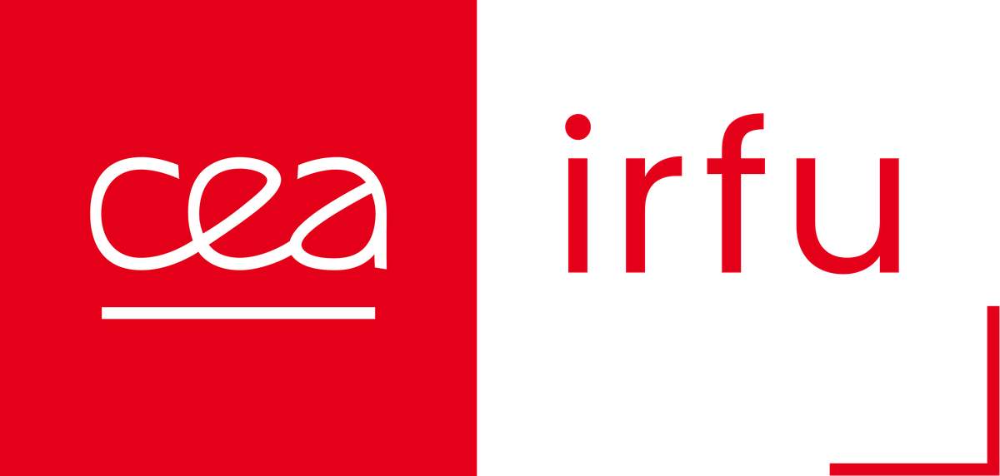
Data-driven optimisation of superconducting magnets and particle accelerators
Damien F. G. Minenna, Robin Penavaire, Valerio Calvelli, Christophe Berriaud, Damien Simon,
Francesco Stacchi, Michel Segreti, Olivier Tuske
CEA Paris-Saclay, IRFU
Séminaire AISSAI – IA en ingénierie mécanique
Minenna et al. (2026), arXiv:2603.29740
Points drawn uniformly at random
No real convergence
Selection of the best, crossover and mutation
Slow convergence: requires evaluating large populations over multiple generations
New individuals from weighted differences between others
Easy to use: few hyperparameters (F, CR, population size)
Particles drawn to their own best and to the swarm’s best position
Easy to use: low number of hyperparameters
Evolution strategy: the Gaussian search distribution (dashed ellipse) adapts its size and orientation
Self-adapting: no step size to tune
Gaussian-process surrogate; new points maximise the expected improvement
Better convergence: reduces the amount of data required
Active learning: network refitted at each iteration; new points are the best predicted
Weaknesses: training overhead, risk of overfitting
Both: handle non-differentiable or discontinuous functions and can escape local minima, but do not guarantee the global optimum
Data generated in different projects can be used for regression analysis
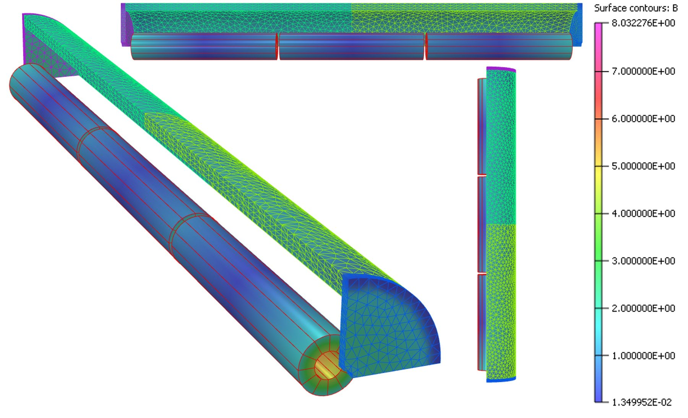
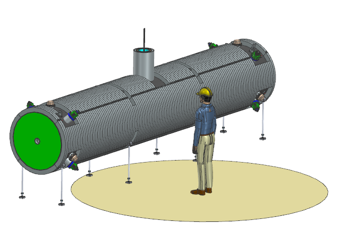
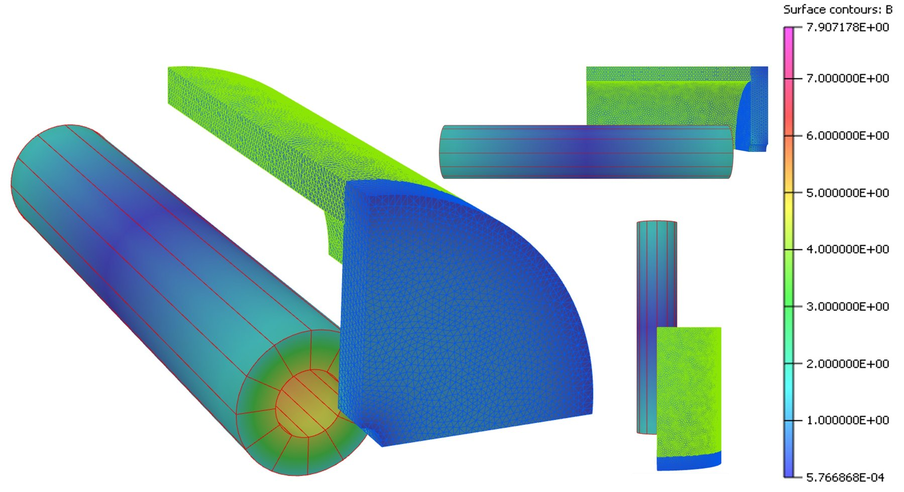
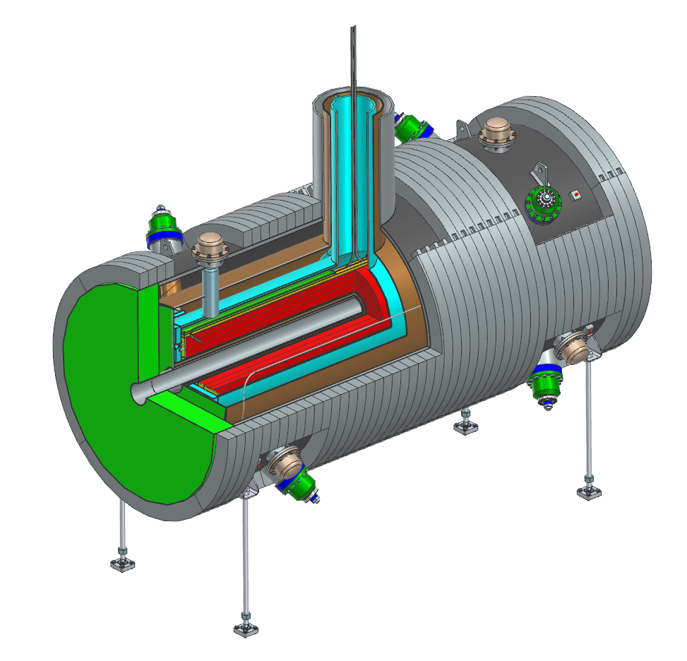
Compute everything together in the same workflow: magnetic, mechanical, conductor, quench
Optimisers compared: random scan, particle swarm optimisation, and combined Bayesian optimisation (BO) + covariance matrix adaptation evolution strategy (CMA-ES)
Minenna et al. (2026), doi:10.2139/ssrn.6641717
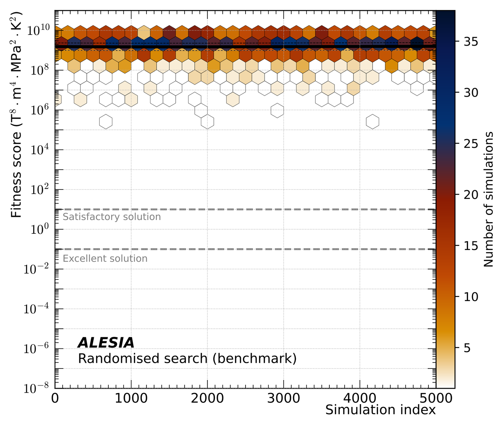
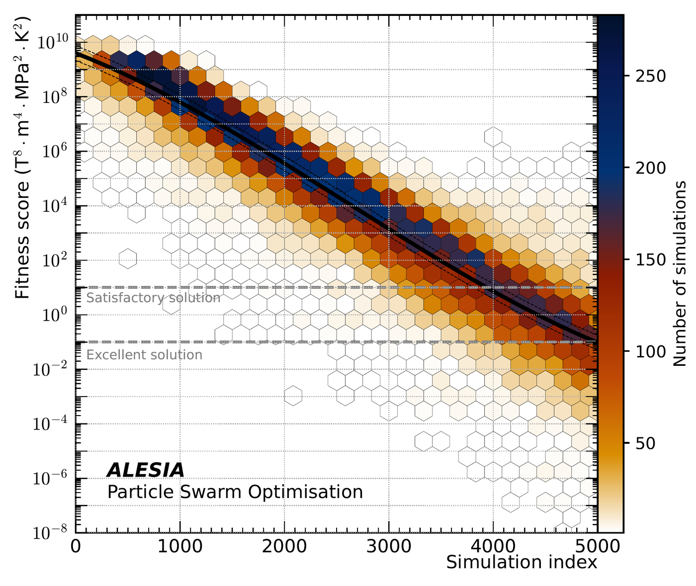
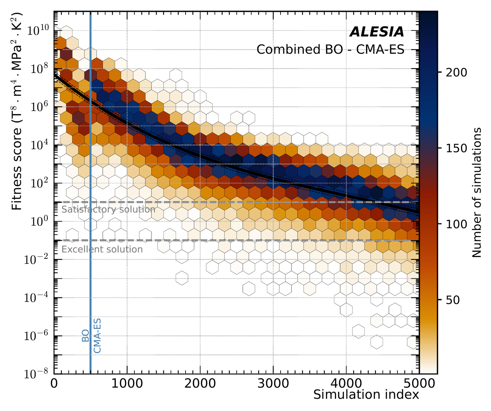
Any questions?
Damien Minenna · damien.minenna@cea.fr
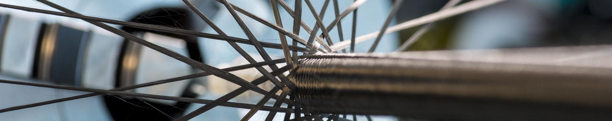
| Target for CDR | SHORT / LONG | Units | Weight |
|---|---|---|---|
| FOM | 15.3 / 46.75 | T·m | 10 000 |
| Bquad | < 1.5 | G | 1 000 |
| BRCS | < 3 | G | 1 000 |
| Von Mises on coil | < 150 | MPa | 5 |
| Hotspot | < 150 | K | 2 |
| Tc margin | > 1.2 | K | 10 |
| Boundary conditions | SHORT / LONG | Units |
|---|---|---|
| Bore diameter | 100 | mm |
| Cryostat diameter | ≤ 1200 | mm |
| Cryostat length | ≤ 2.5 / 6.3 | m |
The LONG is more challenging than the SHORT
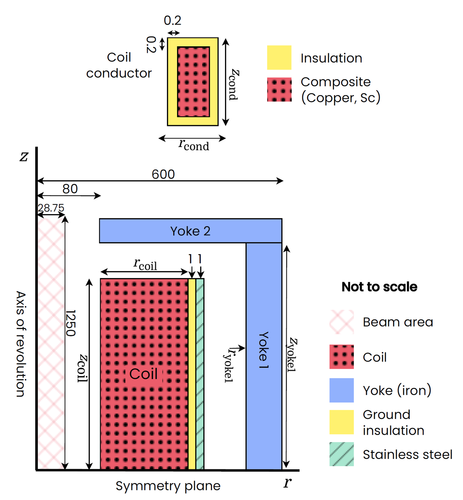
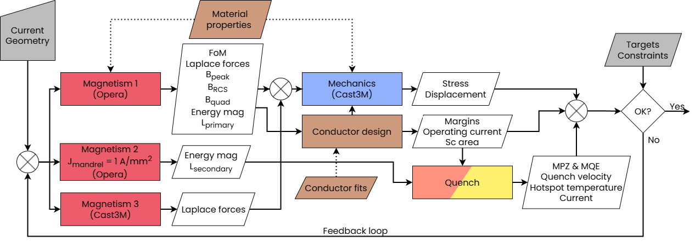
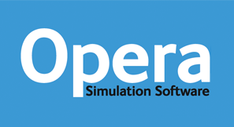
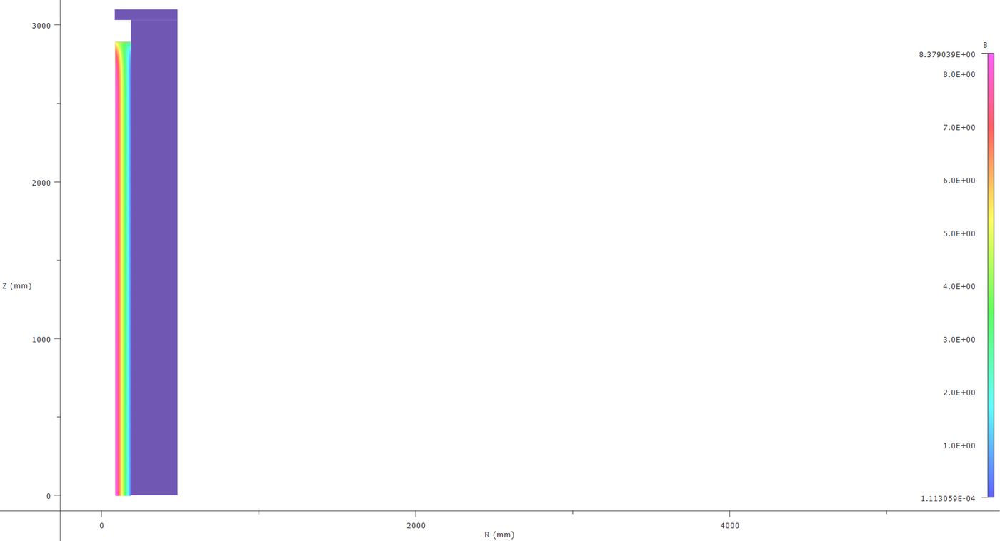
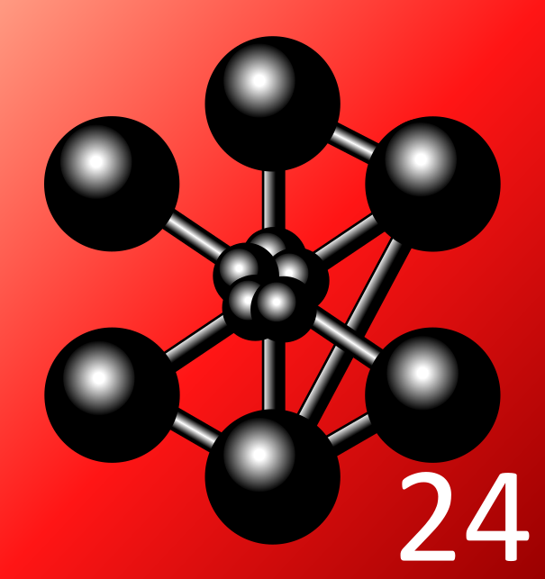
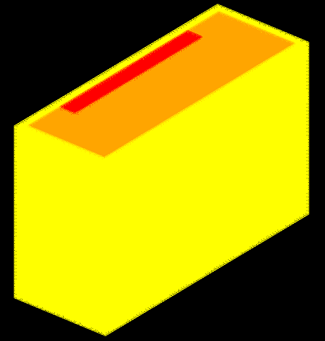
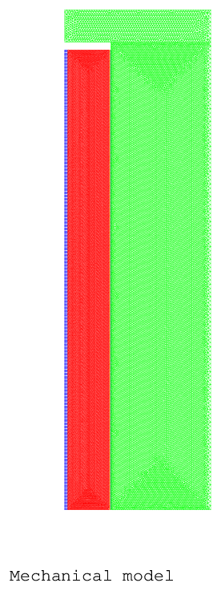
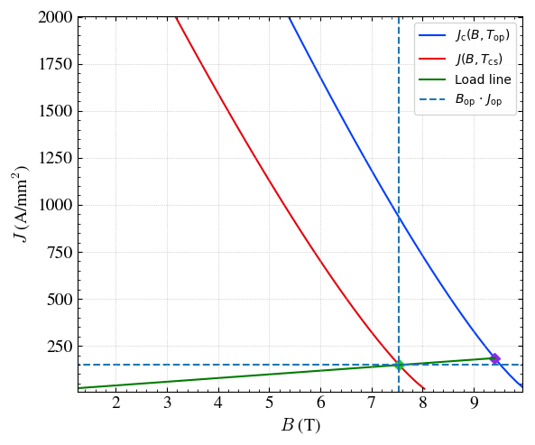
Understand how the strong interaction creates 99% of the visible mass of the universe
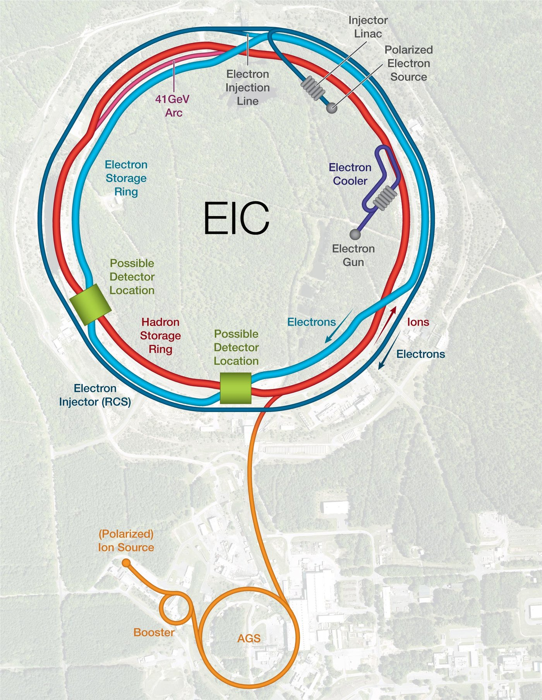
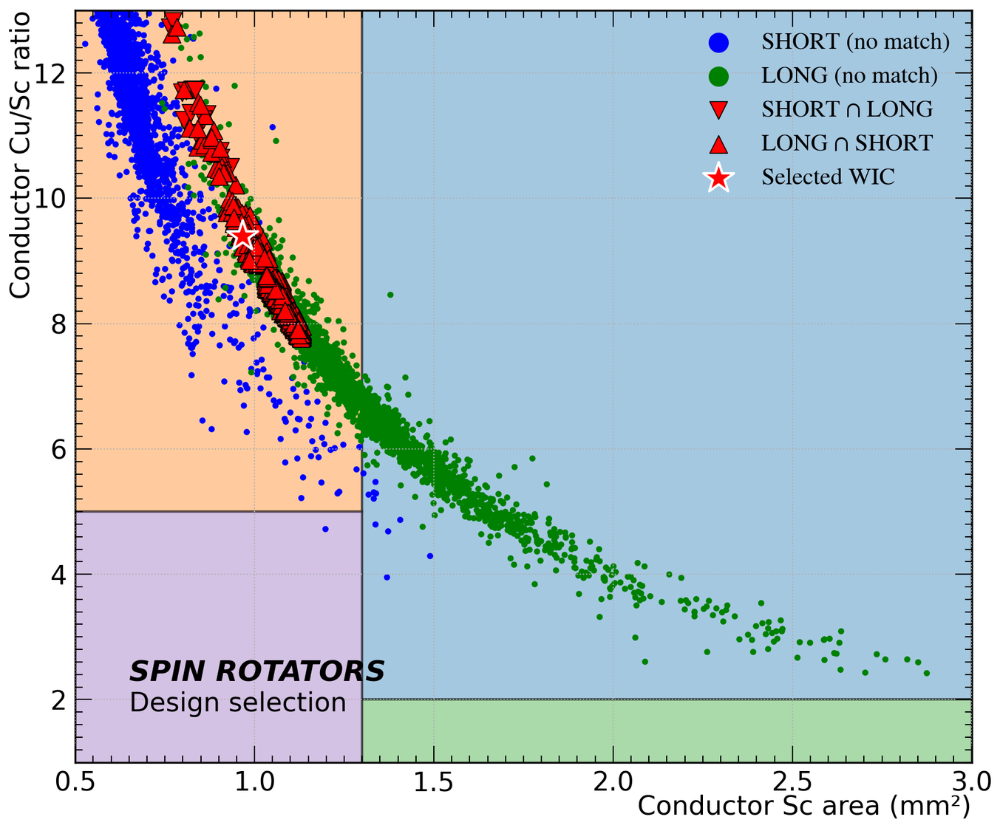